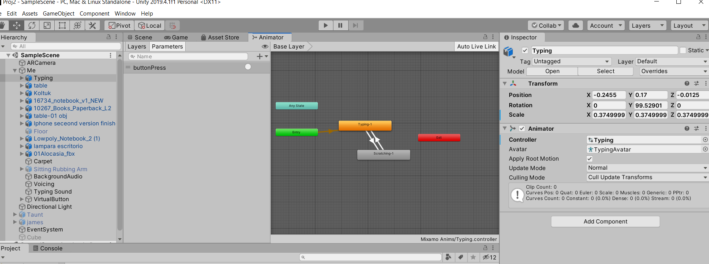
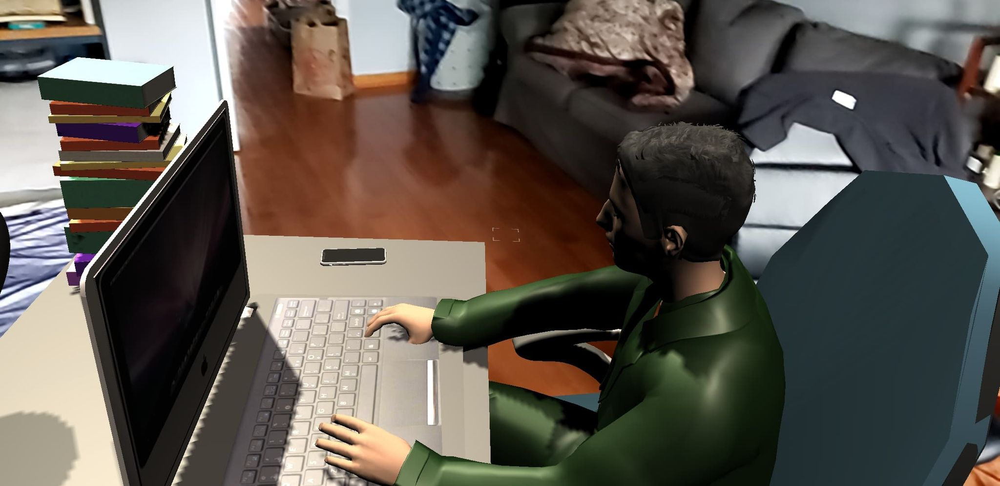
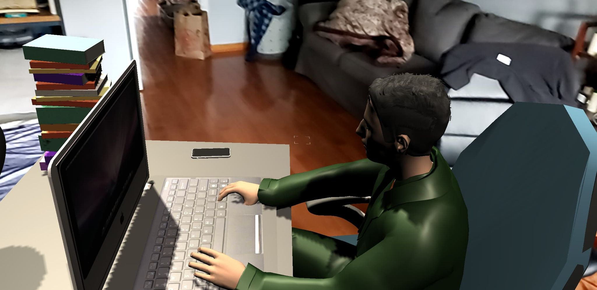
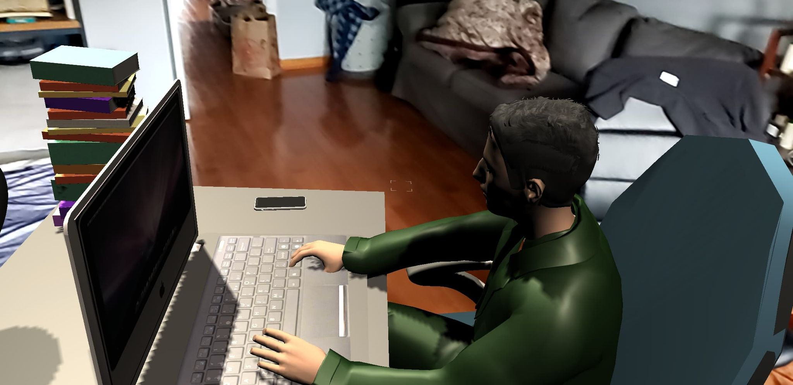

Welcome! Today, I will be taking you through some very awesome virtual realities! We will be looking at how we could
learn to interact with things, just as you see in games!
This project is created using Unity version 2019.4.1. In it we use the Vuforia Engine which is an augmented reality software development kit for mobile devices.
While it enables the use of augmented reality applications on mobile phones, it also uses computer vision technology to recognize and track the 3D objects in real
time as used in this project. In order to run this project, simply click the link here to get full
access to the files. Simply download, open Unity, and run the project. You will have to press "o" on your keyboard to interact with
many of the things in the project.
What you can expect
In photos 1 and 2, we can see the colliders for both objects that will animate. The lamp will act as an actual lamp
in real life where you can turn it on and off again. In the vending machine photo, this is supposed to work as
vending machine do when they go inactive for a while, the light is turned off to perserve energy. When someone
activates it, or in this case hits "o" on their keyboard, it will turn on the vending machine and cause it to light up.
Photo 1: Turning on an off a lamp
Photo 2: Vending machine activation
In photo 4, we can look closer at the script as to how this all works and comes together.
If we look closely at line 10, we can see that we instantiate a call for Collider for a player (or in this case
the user who is walking around [you]). When a player is within the bounds of the colliders for any of these obejcts
and hits the appropiate key, it will "animate" as programmed. In this case I set up a lighting affect for each of
these obejcts in order to imitate real life.
Photo 3: Adding audio to character colliders
Photo 4: Collider scripting
In photo 6, we can see how the humanoids in the virutal reality setting are supposed to interact once you get near them.
The same concept applies when I added colliders in order to detect if someone was near close enough in order to activate
an action, or in this cas a sound. In picture 5, we see that the humanoid as well as the objects on the tables all have
physcial 3D colliders. This will allow the imitation of physics occuring in the virutal reality simulation.
We make is so that when you go into the collider boundary, it will trigger the animation as well as speach from each humanoid.
Photo 5: Adding colliders to objects
Photo 6: Transtion between mixamo animations
As seen in picture 7, the vending machine will have a smaller collider boundary in order to imiatate a more realisitc
experience of using one. It is not possible to poke the buttons with your finger from 10 feet away, so I made this collider
a lot smaller given that the vending machine is so large. On the other hand, I made the collider for the lightswitch a lot
larger because of the size of the switch. It is very small and could prove difficult when trying to turn it on and off.
Photo 7: Small collider to vending
Photo 8: Lightswitch
So as we can see, the lamp has a direction of light that will be in that area when the collider as down in picture 9
is activated. We can also see as in picture 10 that we have colliders for our humanoids that will also activate a sound once
they are interacted with. You would have to have a trigger affect that you can see back in photo 6 where it will
change to another animation because you added a transition between the two. What activates the transition in this case
is the button press once you are in the vacinity of the collider. Being outside the collider will not work because
it has been programmed as you would experience a game.
Photo 9: Lamp collider
Photo 10:
Welcome to CS 428
This will be the website used to post every project created in this course. I am expecting an
exciting and fresh expereience to a different side of development with Unity. I do not have a strong background in C# nor have I ever
played with Unity or tested it our prior to this course. Everything I learn will be broken down into projects and futher broken down as their own tabs.
Feel free to look around, check out my work, and reach out to me if you have any questions!
Welcome! Today, I will be taking you through some very awesome augmented realities! From checking the time to the temperature outside, you will be able to see these things
without having to Google it!
This project is created using Unity version 2019.4.1. In it we use the Vuforia Engine which is an augmented reality software development kit for mobile devices. While it enables the use of augmented reality applications on mobile phones, it also uses computer vision technology to recognize and track the 3D objects in real time as used in this project. In order to run this project, simply click the link here to get full access to the files. Simply download, open Unity, and run the project. You should have a webcam on your computer in order to be able to see everything. One quick note regarding some of the objects is that you will need to sign-up for free at openweathermap in order to generate your own API key. This will allow you to get relevant data to your surrounding via a JSON file that one of the scripts I created in the Unity project reads.
What you can expect from this project:
As you can see, the alarm clock will tell you the hour and seconds as well as AM or PM. The alarm clock refreshes every 30 seconds (this could be changed within the
script).
Next, we have the calendar. The script refreshes every 30 seconds (although this frequency isn't necessary given the amount of seconds in a day).
Now, for the more complicated and exciting thing. Using an API, we can get access to a JSON file that tells us what the weather
is like outside. In this object, we can see the temperature as well as the humidity outside. A brief rundown as to how this all works
can be see in the video.
Last, we have a windsock that [is supposed to] show you how windy it is outside and in what direction the wind is blowing.
Of course, it is not 105 mph winds as the picture shows, but the API takes data from the wind catagory of the JSON file and checks
to see where the range of wind degree falls under and then simply prints out the direction instead of the degree.
Project 2 - In the Land of Make Believe
Welcome! Today, I will be taking you through some very awesome augmented realities! I will be showing you how to animate and get your animation to transition between
animations using a virtual button!
This project is created using Unity version 2019.4.1. In it we use the Vuforia Engine which is an augmented reality software development kit for mobile devices.
While it enables the use of augmented reality applications on mobile phones, it also uses computer vision technology to recognize and track the 3D objects in real
time as used in this project. In order to run this project, simply click the link here to get full
access to the files. Simply download, open Unity, and run the project. You should have a webcam on your computer as well as a mobile phone in order to be able to see
everything.
What you can expect from this project:

In this project, you will be witnessing what it is like to animate in augmented reality. As you can see in the picture on the left,
we have a virtual reality button that will trigger a set of methods as well as a new animation. The picture on the right shows how
we have a transitional setting between two different Mixamo animations.
We have here some code as to how you can animate and add sound to your MakeHuman humanoid's virtual button. In my script, I show how you
instantiate your objects and I have two audio sources; one for the voicing that I did and then another one for the typing. So I
made it so that once you put your hand over the virtual button, the typing would stop and then the voicing would play. I then had
it so that the typing would play once you release it and to stop so that it makes sense what you see as the animation.
In this project, you will also have access to seeing what it is like to use your mobile phone
to see install a Unity scene into your reality.

For this part, I removed the couch and the plant just to be able to get a better understanding of how this would look in real life.
I did not want it to be all clustered. In order to run this part, you have to go into your build settings and switch the platform
to android and once you switch platforms, then you just have it connected to your device and then you can just choose to load the
second scene. When you build it, it'll run and download as an apk and then what you can do is connect your phone into the laptop
or computer, open your phone to downloads, and then just drag and drop that in there.
Robo Recall
Robo Recall is an action based virtual reality first-person shooter developed by Epic Games with Unreal Engine 4 editor. The game requires virtual reality platforms such as
the Oculus Rift and Oculus Rift S. It was released back in March 2017 alongside other dozens of other competitive virtual reality games such
as Farpoint, Skyworld, and Star Trek: Bridge Crew. Robo Recall has been a big hit for the Rift and has caught the attention of many virtual
reality game fans. In Robo Recall, having a robot becomes second nature to having a driver license. The issue is however that
robots have become rogue doing whatever they want, and it is your job to recall the defective robots. Will they come without a fight?
Why it is a Good Use of AR/VR
With virtual reality becoming more and more popular for our recreational uses for entertainment and life simulations, the market is also
expanding immensely. Currently, the revenue for VR games worldwide is $1.1 billion. In as short as 4 more years, the revenue in 2024 will be
at $2.4 billion (Statista, 2020)
This will cause there to be more interest in VR D&R, hence, allowing more money to flow towards funding new technology and learning activities
for the VR headset in general. Currently, there exists educational uses for VR games that allow students to interactively learn about things that
are less interesting when they are just prints of a book. If making games like Robo Recall expand the interest of VR, we can expect games to get
much better and more entertaining graphically and design-wise.
Intended Users
The intended users for this game is for the community that admires the futuristic realities of the world. It entertains the idea that someday we will
see robots co-existing with human in order to provide meaningful services such as doing chores and helping people. People who may have seen the movie
I, Robot may have a much better understanding as to what the plot of this game might be. Your job is to destroy and decimate any death bots that appear
in your way from using various weaponry to ripping them into pieces with your own robot-like hands.
Gameplay Photo 1
Gameplay Photo 2
Gameplay Photo 3
Gameplay Photo 4
Positives
A good thing about the game is it makes the player the star of the world. It makes the player feel connected to the virtual reality and allows them
to do things that they wouldn't be able to do in real life. In order to clear the area, you have to put in the work and the action to do so.
You can't do it by spamming a button, but instead, by getting creative as to how your eliminate the threat at hand. There are dozens of creative ways to
destroy a single robot. From being able to throw a robot off a building to ripping off its limbs to finish the job, there are tons of ways for you to be
creative in your destruction of death bots that are trying to cause total chaos and destruction.
Another good aspect of this game is that you can play the game either sitting or standing. The supported tracking modes in the game are front-facing and 360 degrees.
It also does not require internet to play and this is about something that we have learned in class to do in Unity with our humanoids in project 2.
Weapons
Pistol
Shotgun
The weapon system in this game is very simple. This game is a good use of AR/VR because it creates a realistic experience for someone in a
virtual game. For example, "One of the best things about the game is that the weapons feels like they have real weight to them. Their accuracy
is wholly dependant on your accuracy" (The Guardian, 2017). They have a semi-auto handgun, a more powerful revolver, a shotgun and a plasma
rifle. In order to upgrade them, you have to collect stars which you receive by completing missions. This gives the players a challenge of
its own instead of granting every weapon from the get-go. Instead, it gives the players a feeling of progress and warranty when they get a
much stronger weapon that they earned and deserve. Don't forget -- if you run out of bullets, use your hands!
Hangun
Semi
Negatives
Some of the negatives that come in general VR games is the cost of both the hardware and software combined. For example, although Robo Recall is only $29.99,
you also need an Oculus Rift in order to play which is around $399.99. Another negative more specifically of Robo Recall is the lack of variety of level designs.
You spend majority of the interactive game outside in the streets of a futuristic city recalling defective robots that disobeyed and revolted against their
masters. Now, it is your job to go through the city getting rid of them. You are however not ever taken through the insides of buildings and it could become a
bit repetitive and stale when nothing other than what you do changes your environment. Sometimes players want that element of surprise, but you do not exactly
get that in Robo Recall, despite it being so action-filled. One other negative that many people point out is the short gameplay, but the length of the game
is not the point! Instead of walking, you 'teleport' to different locations. Some reviewers want the feeling of walking around instead of clicking and teleporting
to your location.
Game Locations
Rooftop
Old Town
City Centre
Game Reviews
Final Remarks
When you are on a budget, you cannot have it all. As VR games become more popular in everyday use for gamers around the globe, we can only expect game deigns to get better.
We need fun and interactive games like Robo Recall to garner the interest of people to try out new ways of entertaining themselves. According to Kommando Tech, "As of 2018,
there are 171 million active VR users in the world." Robo Recall has something that many people anticipate in the future -- robots working alongside humans.


 
